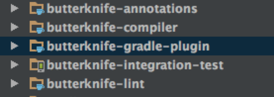

本文分析的源码为8.4.0。
项目结构

butterknife包含ButterKnife核心的Api，如ButterKnife。butterknife-annotations包含了所有定义的注解。butterknife-compiler包含了生成模板代码的代码。这里我们重点研究ButterKnife是如何生成模板代码以及在我们的类中是如何调用的。
核心类
ViewBinding是一个接口，有两个直接的子类FieldViewBinding和MethodViewBinding。
FieldViewBinding封装了使用@BindView注解的Field的信息。
private final String name;//字段名
private final TypeName type;//类型
private final boolean required;//是否必须MethodViewBinding封装了使用@OnClick等注解注解的方法的信息。
private final String name;//方法名
private final List<Parameter> parameters;//方法参数
private final boolean required;//是否必须注解@ListenerClass代表一个监听器的类，作用在如@OnClick等事件监听的注解上。
@Retention(RUNTIME) @Target(ANNOTATION_TYPE)
public @interface ListenerClass {
String targetType();//目标类型
/** Name of the setter method on the {@linkplain #targetType() target type} for the listener. */
String setter();//将该类设置给目标类型的方法
/**
* Name of the method on the {@linkplain #targetType() target type} to remove the listener. If
* empty {@link #setter()} will be used by default.
*/
String remover() default "";
/** Fully-qualified class name of the listener type. */
String type();
/** Enum which declares the listener callback methods. Mutually exclusive to {@link #method()}. */
Class<? extends Enum<?>> callbacks() default NONE.class;
/**
* Method data for single-method listener callbacks. Mutually exclusive with {@link #callbacks()}
* and an error to specify more than one value.
*/
ListenerMethod[] method() default { };
/** Default value for {@link #callbacks()}. */
enum NONE { }
}@ListenerMethod注解代表一个监听类的方法，因为类里面可能有多个方法，所以是一个数组。
@Retention(RUNTIME) @Target(FIELD)
public @interface ListenerMethod {
/** Name of the listener method for which this annotation applies. */
String name();
/** List of method parameters. If the type is not a primitive it must be fully-qualified. */
String[] parameters() default { };
/** Primitive or fully-qualified return type of the listener method. May also be {@code void}. */
String returnType() default "void";
/** If {@link #returnType()} is not {@code void} this value is returned when no binding exists. */
String defaultReturn() default "null";
}@OnClick
@Target(METHOD)
@Retention(CLASS)
@ListenerClass(
targetType = "android.view.View",
setter = "setOnClickListener",
type = "butterknife.internal.DebouncingOnClickListener",
method = @ListenerMethod(
name = "doClick",
parameters = "android.view.View"
)
)
public @interface OnClick {
/** View IDs to which the method will be bound. */
@IdRes int[] value() default { View.NO_ID };
}ViewBindings封装了一个View的所有ViewBinding。例如在SimpleActivity中有如下代码
@BindView(R.id.hello) Button hello;//对应封装成一个FieldViewBinding
@OnClick(R.id.hello) void sayHello() {
Toast.makeText(this, "Hello, views!", LENGTH_SHORT).show();
ButterKnife.apply(headerViews, ALPHA_FADE);//对应封装成一个MethodViewBinding
}
@OnLongClick(R.id.hello) boolean sayGetOffMe() {
Toast.makeText(this, "Let go of me!", LENGTH_SHORT).show();//对应封装成一个MethodViewBinding
return true;
}这里R.id.hello这个view对应的ViewBindings包含一个FieldViewBinding和两个MethodViewBinding。
final class ViewBindings {
private final Id id; //View对应的id
private final Map<ListenerClass, Map<ListenerMethod, Set<MethodViewBinding>>> methodBindings =
new LinkedHashMap<>();//Map用于存储多个MethodViewBinding
private FieldViewBinding fieldBinding;
...
}这里使用 Map
@OnClick({R.id.hello})void sayHello() {
Toast.makeText(this, "Hello, views!", LENGTH_SHORT).show();
ButterKnife.apply(headerViews, ALPHA_FADE);
}
@OnClick({R.id.hello})void sayHello2() {
Toast.makeText(this, "Hello, views!", LENGTH_SHORT).show();
ButterKnife.apply(headerViews, ALPHA_FADE);
}BindingSet可以看做是一个类里面所有所有Binding信息。同时还负责生成代码的逻辑。
final class BindingSet {
private final TypeName targetTypeName;//
private final ClassName bindingClassName;//生成辅助类的类名
private final boolean isFinal;//是否是final类型
private final List<ViewBindings> viewBindings;//用于存储ViewBinding
private final List<FieldCollectionViewBinding> collectionBindings;
private final List<ResourceBinding> resourceBindings;
private final BindingSet parentBinding;//父parentBinding
}ResourceBinding是一个接口，有两个实现类FieldResourceBinding和FieldDrawableBinding。
//例如 @BindColor(android.R.color.black) @ColorInt int blackColor;
//将会生成代码 target.blackColor = ContextCompat.getColor(context, android.R.color.black);
//ResourceMethod方法指的是生成代码的对象
final class FieldResourceBinding implements ResourceBinding {
enum Type {
BITMAP(new ResourceMethod(BindingSet.BITMAP_FACTORY, "decodeResource", true, 1)),
BOOL("getBoolean"),
COLOR(new ResourceMethod(BindingSet.CONTEXT_COMPAT, "getColor", false, 1),
new ResourceMethod(null, "getColor", false, 23)),
COLOR_STATE_LIST(new ResourceMethod(BindingSet.CONTEXT_COMPAT, "getColorStateList", false, 1),
new ResourceMethod(null, "getColorStateList", false, 23)),
DIMEN_AS_INT("getDimensionPixelSize"),
DIMEN_AS_FLOAT("getDimension"),
FLOAT(new ResourceMethod(BindingSet.UTILS, "getFloat", false, 1)),
INT("getInteger"),
INT_ARRAY("getIntArray"),
STRING("getString"),
STRING_ARRAY("getStringArray"),
TEXT_ARRAY("getTextArray"),
TYPED_ARRAY("obtainTypedArray");
private final List<ResourceMethod> methods;
Type(ResourceMethod... methods) {
List<ResourceMethod> methodList = new ArrayList<>(methods.length);
Collections.addAll(methodList, methods);
Collections.sort(methodList);
Collections.reverse(methodList);
this.methods = unmodifiableList(methodList);
}
Type(String methodName) {
methods = singletonList(new ResourceMethod(null, methodName, true, 1));
}
ResourceMethod methodForSdk(int sdk) {
for (ResourceMethod method : methods) {
if (method.sdk <= sdk) {
return method;
}
}
throw new AssertionError();
}
}
//资源方法
static final class ResourceMethod implements Comparable<ResourceMethod> {
final ClassName typeName;//类名
final String name;//方法名
final boolean requiresResources;
final int sdk;//sdk版本号 因为sdk版本号不一样，调用的方法可能不一样。
ResourceMethod(ClassName typeName, String name, boolean requiresResources, int sdk) {
this.typeName = typeName;
this.name = name;
this.requiresResources = requiresResources;
this.sdk = sdk;
}
@Override
public int compareTo(ResourceMethod other) {
return Integer.compare(sdk, other.sdk);//按照sdk排序
}
}
//构造函数
private final Id id;
private final String name;
private final Type type;
FieldResourceBinding(Id id, String name, Type type) {
this.id = id;
this.name = name;
this.type = type;
}
@Override
public Id id() {
return id;
}
@Override
public boolean requiresResources(int sdk) {
return type.methodForSdk(sdk).requiresResources;
}
@Override
public CodeBlock render(int sdk) {
ResourceMethod method = type.methodForSdk(sdk);
if (method.typeName == null) {
if (method.requiresResources) {
return CodeBlock.of("target.$L = res.$L($L)", name, method.name, id.code);
}
return CodeBlock.of("target.$L = context.$L($L)", name, method.name, id.code);
}
if (method.requiresResources) {
return CodeBlock.of("target.$L = $T.$L(res, $L)", name, method.typeName, method.name,
id.code);
}
return CodeBlock.of("target.$L = $T.$L(context, $L)", name, method.typeName, method.name,
id.code);
}
}解析注解
知道各个类的作用之后，下一步工作就是了解如何解析这些标注了注解的字段和方法的信息，并封装成类。
ButterKnife解析这些信息的类为ButterKnifeProcessor，解析的工作由findAndParseTargets方法完成。
private Map<TypeElement, BindingSet> findAndParseTargets(RoundEnvironment env) { //使用Map存储BindingSet.Builder避免同一个类重复创建BindingSet.Builder
Map<TypeElement, BindingSet.Builder> builderMap = new LinkedHashMap<>();//
Set<TypeElement> erasedTargetNames = new LinkedHashSet<>();//
scanForRClasses(env);
// Process each @BindArray element.
//获取注解@BindArray的Element
for (Element element : env.getElementsAnnotatedWith(BindArray.class)) {
if (!SuperficialValidation.validateElement(element)) continue;
try {
parseResourceArray(element, builderMap, erasedTargetNames);
} catch (Exception e) {
logParsingError(element, BindArray.class, e);
}
}
...
}findAndParseTargets获取不同注解对应的Element，然后调用对应的parse方法来解析。
解析@BindView
parseBindView解析@BindView注解的Element。
private void parseBindView(Element element, Map<TypeElement, BindingSet.Builder> builderMap,
Set<TypeElement> erasedTargetNames) {
//验证注解是否使用正确
boolean hasError = isInaccessibleViaGeneratedCode(BindView.class, "fields", element)
|| isBindingInWrongPackage(BindView.class, element);
TypeMirror elementType = element.asType();
TypeElement enclosingElement = (TypeElement) element.getEnclosingElement();
//例如当@BindView T view; 这时候就是一个TypeKind.TYPEVAR类型
if (elementType.getKind() == TypeKind.TYPEVAR) {//泛型类型
TypeVariable typeVariable = (TypeVariable) elementType;
elementType = typeVariable.getUpperBound();//获取上边界
}
if (!isSubtypeOfType(elementType, VIEW_TYPE) && !isInterface(elementType)) {//判断field的类型
if (elementType.getKind() == TypeKind.ERROR) {
note(element, "@%s field with unresolved type (%s) "
+ "must elsewhere be generated as a View or interface. (%s.%s)",
BindView.class.getSimpleName(), elementType, enclosingElement.getQualifiedName(),
element.getSimpleName());
} else {
error(element, "@%s fields must extend from View or be an interface. (%s.%s)",
BindView.class.getSimpleName(), enclosingElement.getQualifiedName(),
element.getSimpleName());
hasError = true;
}
}
if (hasError) {
return;
}
int id = element.getAnnotation(BindView.class).value();//获取id
BindingSet.Builder builder = builderMap.get(enclosingElement);//创建 BindingSet.Builder
if (builder != null) {
ViewBindings viewBindings = builder.getViewBinding(getId(id));
//当FieldBinding已经存在说明已经绑定过了。重复绑定将抛异常
if (viewBindings != null && viewBindings.getFieldBinding() != null) {
FieldViewBinding existingBinding = viewBindings.getFieldBinding();
error(element, "Attempt to use @%s for an already bound ID %d on '%s'. (%s.%s)",
BindView.class.getSimpleName(), id, existingBinding.getName(),
enclosingElement.getQualifiedName(), element.getSimpleName());
return;
}
} else {
builder = getOrCreateBindingBuilder(builderMap, enclosingElement);
}
String name = element.getSimpleName().toString();//获取FieldName
TypeName type = TypeName.get(elementType);//获取Field的Type
boolean required = isFieldRequired(element);//是否必须
builder.addField(getId(id), new FieldViewBinding(name, type, required));
// Add the type-erased version to the valid binding targets set.
erasedTargetNames.add(enclosingElement);
}
isInaccessibleViaGeneratedCode方法用于通过修饰符来判断字段是否能够被生成的代码访问。由于ButterKnife的原理是通过辅助类来完成findViewById的操作，所以必须引用原来的的字段，因此不能设置为private
target.title = Utils.findRequiredViewAsType(source, R.id.title, "field 'title'", TextView.class);isInaccessibleViaGeneratedCode方法的源码
private boolean isInaccessibleViaGeneratedCode(Class<? extends Annotation> annotationClass,
String targetThing, Element element) {
boolean hasError = false;
TypeElement enclosingElement = (TypeElement) element.getEnclosingElement();
// Verify method modifiers.
Set<Modifier> modifiers = element.getModifiers();
if (modifiers.contains(PRIVATE) || modifiers.contains(STATIC)) {
error(element, "@%s %s must not be private or static. (%s.%s)",
annotationClass.getSimpleName(), targetThing, enclosingElement.getQualifiedName(),
element.getSimpleName());
hasError = true;
}
// Verify containing type.
if (enclosingElement.getKind() != CLASS) {
error(enclosingElement, "@%s %s may only be contained in classes. (%s.%s)",
annotationClass.getSimpleName(), targetThing, enclosingElement.getQualifiedName(),
element.getSimpleName());
hasError = true;
}
// Verify containing class visibility is not private.
if (enclosingElement.getModifiers().contains(PRIVATE)) {
error(enclosingElement, "@%s %s may not be contained in private classes. (%s.%s)",
annotationClass.getSimpleName(), targetThing, enclosingElement.getQualifiedName(),
element.getSimpleName());
hasError = true;
}
return hasError;
}解析方法注解
for (Class<? extends Annotation> listener : LISTENERS) {
findAndParseListener(env, listener, builderMap, erasedTargetNames);
} private void findAndParseListener(RoundEnvironment env,
Class<? extends Annotation> annotationClass,
Map<TypeElement, BindingSet.Builder> builderMap, Set<TypeElement> erasedTargetNames) {
for (Element element : env.getElementsAnnotatedWith(annotationClass)) {
if (!SuperficialValidation.validateElement(element)) continue;
try {
parseListenerAnnotation(annotationClass, element, builderMap, erasedTargetNames);
} catch (Exception e) {
StringWriter stackTrace = new StringWriter();
e.printStackTrace(new PrintWriter(stackTrace));
error(element, "Unable to generate view binder for @%s.\n\n%s",
annotationClass.getSimpleName(), stackTrace.toString());
}
}
} private void parseListenerAnnotation(Class<? extends Annotation> annotationClass, Element element,
Map<TypeElement, BindingSet.Builder> builderMap, Set<TypeElement> erasedTargetNames)
throws Exception {
// This should be guarded by the annotation's @Target but it's worth a check for safe casting.
if (!(element instanceof ExecutableElement) || element.getKind() != METHOD) {
throw new IllegalStateException(
String.format("@%s annotation must be on a method.", annotationClass.getSimpleName()));
}
ExecutableElement executableElement = (ExecutableElement) element;
TypeElement enclosingElement = (TypeElement) element.getEnclosingElement();
// Assemble information on the method.
Annotation annotation = element.getAnnotation(annotationClass);
Method annotationValue = annotationClass.getDeclaredMethod("value");
if (annotationValue.getReturnType() != int[].class) {
throw new IllegalStateException(
String.format("@%s annotation value() type not int[].", annotationClass));
}
int[] ids = (int[]) annotationValue.invoke(annotation);//通过反射获取值
String name = executableElement.getSimpleName().toString();//方法名
boolean required = isListenerRequired(executableElement);
// Verify that the method and its containing class are accessible via generated code.
boolean hasError = isInaccessibleViaGeneratedCode(annotationClass, "methods", element);
hasError |= isBindingInWrongPackage(annotationClass, element);
//发现重复的id
Integer duplicateId = findDuplicate(ids);
if (duplicateId != null) {
error(element, "@%s annotation for method contains duplicate ID %d. (%s.%s)",
annotationClass.getSimpleName(), duplicateId, enclosingElement.getQualifiedName(),
element.getSimpleName());
hasError = true;
}
ListenerClass listener = annotationClass.getAnnotation(ListenerClass.class);
if (listener == null) {
throw new IllegalStateException(
String.format("No @%s defined on @%s.", ListenerClass.class.getSimpleName(),
annotationClass.getSimpleName()));
}
for (int id : ids) {
if (id == NO_ID.value) {
if (ids.length == 1) {
if (!required) {
error(element, "ID-free binding must not be annotated with @Optional. (%s.%s)",
enclosingElement.getQualifiedName(), element.getSimpleName());
hasError = true;
}
} else {
error(element, "@%s annotation contains invalid ID %d. (%s.%s)",
annotationClass.getSimpleName(), id, enclosingElement.getQualifiedName(),
element.getSimpleName());
hasError = true;
}
}
}
ListenerMethod method;
ListenerMethod[] methods = listener.method();
if (methods.length > 1) {
throw new IllegalStateException(String.format("Multiple listener methods specified on @%s.",
annotationClass.getSimpleName()));
} else if (methods.length == 1) {
if (listener.callbacks() != ListenerClass.NONE.class) {
throw new IllegalStateException(
String.format("Both method() and callback() defined on @%s.",
annotationClass.getSimpleName()));
}
method = methods[0];
} else {
Method annotationCallback = annotationClass.getDeclaredMethod("callback");
Enum<?> callback = (Enum<?>) annotationCallback.invoke(annotation);
Field callbackField = callback.getDeclaringClass().getField(callback.name());
method = callbackField.getAnnotation(ListenerMethod.class);
if (method == null) {
throw new IllegalStateException(
String.format("No @%s defined on @%s's %s.%s.", ListenerMethod.class.getSimpleName(),
annotationClass.getSimpleName(), callback.getDeclaringClass().getSimpleName(),
callback.name()));
}
}
// Verify that the method has equal to or less than the number of parameters as the listener.
List<? extends VariableElement> methodParameters = executableElement.getParameters();
if (methodParameters.size() > method.parameters().length) {
error(element, "@%s methods can have at most %s parameter(s). (%s.%s)",
annotationClass.getSimpleName(), method.parameters().length,
enclosingElement.getQualifiedName(), element.getSimpleName());
hasError = true;
}
// Verify method return type matches the listener.
TypeMirror returnType = executableElement.getReturnType();
if (returnType instanceof TypeVariable) {
TypeVariable typeVariable = (TypeVariable) returnType;
returnType = typeVariable.getUpperBound();
}
if (!returnType.toString().equals(method.returnType())) {
error(element, "@%s methods must have a '%s' return type. (%s.%s)",
annotationClass.getSimpleName(), method.returnType(),
enclosingElement.getQualifiedName(), element.getSimpleName());
hasError = true;
}
if (hasError) {
return;
}
Parameter[] parameters = Parameter.NONE;
if (!methodParameters.isEmpty()) {
parameters = new Parameter[methodParameters.size()];
BitSet methodParameterUsed = new BitSet(methodParameters.size());
String[] parameterTypes = method.parameters();
for (int i = 0; i < methodParameters.size(); i++) {
VariableElement methodParameter = methodParameters.get(i);
TypeMirror methodParameterType = methodParameter.asType();
if (methodParameterType instanceof TypeVariable) {
TypeVariable typeVariable = (TypeVariable) methodParameterType;
methodParameterType = typeVariable.getUpperBound();
}
for (int j = 0; j < parameterTypes.length; j++) {
if (methodParameterUsed.get(j)) {
continue;
}
if (isSubtypeOfType(methodParameterType, parameterTypes[j])
|| isInterface(methodParameterType)) {
parameters[i] = new Parameter(j, TypeName.get(methodParameterType));
methodParameterUsed.set(j);
break;
}
}
if (parameters[i] == null) {
StringBuilder builder = new StringBuilder();
builder.append("Unable to match @")
.append(annotationClass.getSimpleName())
.append(" method arguments. (")
.append(enclosingElement.getQualifiedName())
.append('.')
.append(element.getSimpleName())
.append(')');
for (int j = 0; j < parameters.length; j++) {
Parameter parameter = parameters[j];
builder.append("\n\n Parameter #")
.append(j + 1)
.append(": ")
.append(methodParameters.get(j).asType().toString())
.append("\n ");
if (parameter == null) {
builder.append("did not match any listener parameters");
} else {
builder.append("matched listener parameter #")
.append(parameter.getListenerPosition() + 1)
.append(": ")
.append(parameter.getType());
}
}
builder.append("\n\nMethods may have up to ")
.append(method.parameters().length)
.append(" parameter(s):\n");
for (String parameterType : method.parameters()) {
builder.append("\n ").append(parameterType);
}
builder.append(
"\n\nThese may be listed in any order but will be searched for from top to bottom.");
error(executableElement, builder.toString());
return;
}
}
}
MethodViewBinding binding = new MethodViewBinding(name, Arrays.asList(parameters), required);
BindingSet.Builder builder = getOrCreateBindingBuilder(builderMap, enclosingElement);
for (int id : ids) {
if (!builder.addMethod(getId(id), listener, method, binding)) {
error(element, "Multiple listener methods with return value specified for ID %d. (%s.%s)",
id, enclosingElement.getQualifiedName(), element.getSimpleName());
return;
}
}
// Add the type-erased version to the valid binding targets set.
erasedTargetNames.add(enclosingElement);
}解析资源绑定
解析资源的代码基本都差不多。这里只给出parseResourceString的源码和注释。
private void parseResourceString(Element element,
Map<TypeElement, BindingSet.Builder> builderMap, Set<TypeElement> erasedTargetNames) {
boolean hasError = false;
TypeElement enclosingElement = (TypeElement) element.getEnclosingElement();
// Verify that the target type is String.
if (!STRING_TYPE.equals(element.asType().toString())) {
error(element, "@%s field type must be 'String'. (%s.%s)",
BindString.class.getSimpleName(), enclosingElement.getQualifiedName(),
element.getSimpleName());
hasError = true;
}
// Verify common generated code restrictions.
hasError |= isInaccessibleViaGeneratedCode(BindString.class, "fields", element);
hasError |= isBindingInWrongPackage(BindString.class, element);
if (hasError) {
return;
}
// Assemble information on the field.
String name = element.getSimpleName().toString();
int id = element.getAnnotation(BindString.class).value();
BindingSet.Builder builder = getOrCreateBindingBuilder(builderMap, enclosingElement);
builder.addResource(
new FieldResourceBinding(getId(id), name, FieldResourceBinding.Type.STRING));
erasedTargetNames.add(enclosingElement);
}
设置parentBinding
在findAndParseTargets最后几行代码的作用是为解析出来的BindingSet.Builder设置parentBinding
Deque<Map.Entry<TypeElement, BindingSet.Builder>> entries =
new ArrayDeque<>(builderMap.entrySet());
Map<TypeElement, BindingSet> bindingMap = new LinkedHashMap<>();
while (!entries.isEmpty()) {
Map.Entry<TypeElement, BindingSet.Builder> entry = entries.removeFirst();
TypeElement type = entry.getKey();
BindingSet.Builder builder = entry.getValue();
TypeElement parentType = findParentType(type, erasedTargetNames);
if (parentType == null) {//没有parentBinding，不是某各类的子类
bindingMap.put(type, builder.build());
} else {
BindingSet parentBinding = bindingMap.get(parentType);
if (parentBinding != null) {
builder.setParent(parentBinding);
bindingMap.put(type, builder.build());
} else {
// Has a superclass binding but we haven't built it yet. Re-enqueue for later.
entries.addLast(entry);
}
}
}生成代码
生成代码主要由BindingSet的brewJava方法完成。
JavaFile brewJava(int sdk) {
return JavaFile.builder(bindingClassName.packageName(), createType(sdk))
.addFileComment("Generated code from Butter Knife. Do not modify!")//添加注释
.build();
}private TypeSpec createType(int sdk) {
TypeSpec.Builder result = TypeSpec.classBuilder(bindingClassName.simpleName())//类名
.addModifiers(PUBLIC);//修饰符
if (isFinal) {
result.addModifiers(FINAL);
}
if (parentBinding != null) {
result.superclass(parentBinding.bindingClassName);//添加父类
} else {
result.addSuperinterface(UNBINDER);//添加接口UnBinder
}
if (hasTargetField()) {
result.addField(targetTypeName, "target", PRIVATE);//添加字段target
}
//
if (!constructorNeedsView()) {
// Add a delegating constructor with a target type + view signature for reflective use.
result.addMethod(createBindingViewDelegateConstructor(targetTypeName));
}
result.addMethod(createBindingConstructor(targetTypeName, sdk));
if (hasViewBindings() || parentBinding == null) {
result.addMethod(createBindingUnbindMethod(result, targetTypeName));
}
return result.build();
}createBindingConstructor创建构造函数
private MethodSpec createBindingConstructor(TypeName targetType, int sdk) {
MethodSpec.Builder constructor = MethodSpec.constructorBuilder()
.addAnnotation(UI_THREAD)//添加注解
.addModifiers(PUBLIC);//添加修饰符
if (hasMethodBindings()) {//如果没有MethodBinding就不用声明成final类型
constructor.addParameter(targetType, "target", FINAL);
} else {
constructor.addParameter(targetType, "target");
}
if (constructorNeedsView()) {//当构造函数需要View
constructor.addParameter(VIEW, "source");
} else {
constructor.addParameter(CONTEXT, "context");
}
if (hasUnqualifiedResourceBindings()) {//添加SuppressWarnings注解
// Aapt can change IDs out from underneath us, just suppress since all will work at runtime.
constructor.addAnnotation(AnnotationSpec.builder(SuppressWarnings.class)
.addMember("value", "$S", "ResourceType")
.build());
}
if (parentBinding != null) {//添加父类构造方法的调用
if (parentBinding.constructorNeedsView()) {
constructor.addStatement("super(target, source)");
} else if (constructorNeedsView()) {
constructor.addStatement("super(target, source.getContext())");
} else {
constructor.addStatement("super(target, context)");
}
constructor.addCode("\n");
}
if (hasTargetField()) {//
constructor.addStatement("this.target = target");
constructor.addCode("\n");
}
if (hasViewBindings()) {
if (hasViewLocal()) {
// Local variable in which all views will be temporarily stored.
constructor.addStatement("$T view", VIEW);
}
for (ViewBindings bindings : viewBindings) {
addViewBindings(constructor, bindings);
}
for (FieldCollectionViewBinding binding : collectionBindings) {
constructor.addStatement("$L", binding.render());
}
if (!resourceBindings.isEmpty()) {
constructor.addCode("\n");
}
}
//
if (!resourceBindings.isEmpty()) {
if (constructorNeedsView()) {
constructor.addStatement("$T context = source.getContext()", CONTEXT);
}
if (hasResourceBindingsNeedingResource(sdk)) {
constructor.addStatement("$T res = context.getResources()", RESOURCES);
}
for (ResourceBinding binding : resourceBindings) {
constructor.addStatement("$L", binding.render(sdk));
}
}
return constructor.build();
}addViewBindings用于添加ViewBindings对象所对应的表达式。当只有FieldViewBinding时直接生成代码 target.title = Utils.findRequiredViewAsType(source, R.id.title, "field 'title'", TextView.class);。
private void addViewBindings(MethodSpec.Builder result, ViewBindings bindings) {
if (bindings.isSingleFieldBinding()) {//如果只有FieldBinding
// Optimize the common case where there's a single binding directly to a field.
FieldViewBinding fieldBinding = bindings.getFieldBinding();
CodeBlock.Builder builder = CodeBlock.builder()
.add("target.$L = ", fieldBinding.getName());
//当type是View类型不需要强制转换
boolean requiresCast = requiresCast(fieldBinding.getType());
if (!requiresCast && !fieldBinding.isRequired()) {
builder.add("source.findViewById($L)", bindings.getId().code);
} else {
builder.add("$T.find", UTILS);//Utils.findRequiredViewAsType(source,12345,
builder.add(fieldBinding.isRequired() ? "RequiredView" : "OptionalView");
if (requiresCast) {
builder.add("AsType");
}
builder.add("(source, $L", bindings.getId().code);
if (fieldBinding.isRequired() || requiresCast) {
builder.add(", $S", asHumanDescription(singletonList(fieldBinding)));
}
if (requiresCast) {
builder.add(", $T.class", fieldBinding.getRawType());
}
builder.add(")");
}
result.addStatement("$L", builder.build());
return;
}
//如同时存在FieldViewBinding和MethodViewBinding
//先生成 view = Utils.findRequiredView(source, R.id.hello, "field 'hello', method 'sayHello', method 'sayHello2', and method 'sayGetOffMe'");
//调用addFieldBindings方法生成 target.hello = Utils.castView(view, R.id.hello, "field 'hello'", Button.class);
List<ViewBinding> requiredViewBindings = bindings.getRequiredBindings();
if (requiredViewBindings.isEmpty()) {
result.addStatement("view = source.findViewById($L)", bindings.getId().code);
} else if (!bindings.isBoundToRoot()) {
result.addStatement("view = $T.findRequiredView(source, $L, $S)", UTILS,
bindings.getId().code, asHumanDescription(requiredViewBindings));
}
addFieldBindings(result, bindings);
addMethodBindings(result, bindings);
} private void addFieldBindings(MethodSpec.Builder result, ViewBindings bindings) {
FieldViewBinding fieldBinding = bindings.getFieldBinding();
if (fieldBinding != null) {
if (requiresCast(fieldBinding.getType())) {
result.addStatement("target.$L = $T.castView(view, $L, $S, $T.class)",
fieldBinding.getName(), UTILS, bindings.getId().code,
asHumanDescription(singletonList(fieldBinding)), fieldBinding.getRawType());
} else {
result.addStatement("target.$L = view", fieldBinding.getName());
}
}
} private void addMethodBindings(MethodSpec.Builder result, ViewBindings bindings) {
Map<ListenerClass, Map<ListenerMethod, Set<MethodViewBinding>>> classMethodBindings =
bindings.getMethodBindings();
if (classMethodBindings.isEmpty()) {
return;
}
// We only need to emit the null check if there are zero required bindings.
boolean needsNullChecked = bindings.getRequiredBindings().isEmpty();
if (needsNullChecked) {
result.beginControlFlow("if (view != null)");
}
// Add the view reference to the binding.
String fieldName = "viewSource";
String bindName = "source";
if (!bindings.isBoundToRoot()) {
fieldName = "view" + bindings.getId().value;
bindName = "view";
}
result.addStatement("$L = $N", fieldName, bindName);
for (Map.Entry<ListenerClass, Map<ListenerMethod, Set<MethodViewBinding>>> e
: classMethodBindings.entrySet()) {
ListenerClass listener = e.getKey();
Map<ListenerMethod, Set<MethodViewBinding>> methodBindings = e.getValue();
TypeSpec.Builder callback = TypeSpec.anonymousClassBuilder("")
.superclass(ClassName.bestGuess(listener.type()));
for (ListenerMethod method : getListenerMethods(listener)) {
MethodSpec.Builder callbackMethod = MethodSpec.methodBuilder(method.name())
.addAnnotation(Override.class)
.addModifiers(PUBLIC)
.returns(bestGuess(method.returnType()));
String[] parameterTypes = method.parameters();
for (int i = 0, count = parameterTypes.length; i < count; i++) {
callbackMethod.addParameter(bestGuess(parameterTypes[i]), "p" + i);
}
boolean hasReturnType = !"void".equals(method.returnType());
CodeBlock.Builder builder = CodeBlock.builder();
if (hasReturnType) {
builder.add("return ");
}
if (methodBindings.containsKey(method)) {
for (MethodViewBinding binding : methodBindings.get(method)) {
builder.add("target.$L(", binding.getName());
List<Parameter> parameters = binding.getParameters();
String[] listenerParameters = method.parameters();
for (int i = 0, count = parameters.size(); i < count; i++) {
if (i > 0) {
builder.add(", ");
}
Parameter parameter = parameters.get(i);
int listenerPosition = parameter.getListenerPosition();
if (parameter.requiresCast(listenerParameters[listenerPosition])) {
builder.add("$T.<$T>castParam(p$L, $S, $L, $S, $L)", UTILS, parameter.getType(),
listenerPosition, method.name(), listenerPosition, binding.getName(), i);
} else {
builder.add("p$L", listenerPosition);
}
}
builder.add(");\n");
}
} else if (hasReturnType) {
builder.add("$L;\n", method.defaultReturn());
}
callbackMethod.addCode(builder.build());
callback.addMethod(callbackMethod.build());
}
boolean requiresRemoval = listener.remover().length() != 0;
String listenerField = null;
if (requiresRemoval) {
TypeName listenerClassName = bestGuess(listener.type());
listenerField = fieldName + ((ClassName) listenerClassName).simpleName();
result.addStatement("$L = $L", listenerField, callback.build());
}
if (!VIEW_TYPE.equals(listener.targetType())) {
result.addStatement("(($T) $N).$L($L)", bestGuess(listener.targetType()), bindName,
listener.setter(), requiresRemoval ? listenerField : callback.build());
} else {
result.addStatement("$N.$L($L)", bindName, listener.setter(),
requiresRemoval ? listenerField : callback.build());
}
}
if (needsNullChecked) {
result.endControlFlow();
}
}调用辅助方法
我们在类中通过调用ButterKnife的bind方法来调用辅助类的。
@NonNull @UiThread
public static Unbinder bind(@NonNull Object target, @NonNull View source) {
return createBinding(target, source);
}
private static Unbinder createBinding(@NonNull Object target, @NonNull View source) {
Class<?> targetClass = target.getClass();
if (debug) Log.d(TAG, "Looking up binding for " + targetClass.getName());
Constructor<? extends Unbinder> constructor = findBindingConstructorForClass(targetClass);
if (constructor == null) {
return Unbinder.EMPTY;
}
//noinspection TryWithIdenticalCatches Resolves to API 19+ only type.
try {
return constructor.newInstance(target, source);
} catch (IllegalAccessException e) {
throw new RuntimeException("Unable to invoke " + constructor, e);
} catch (InstantiationException e) {
throw new RuntimeException("Unable to invoke " + constructor, e);
} catch (InvocationTargetException e) {
Throwable cause = e.getCause();
if (cause instanceof RuntimeException) {
throw (RuntimeException) cause;
}
if (cause instanceof Error) {
throw (Error) cause;
}
throw new RuntimeException("Unable to create binding instance.", cause);
}
}
@Nullable @CheckResult @UiThread
private static Constructor<? extends Unbinder> findBindingConstructorForClass(Class<?> cls) {
Constructor<? extends Unbinder> bindingCtor = BINDINGS.get(cls);
if (bindingCtor != null) {
if (debug) Log.d(TAG, "HIT: Cached in binding map.");
return bindingCtor;
}
String clsName = cls.getName();
if (clsName.startsWith("android.") || clsName.startsWith("java.")) {
if (debug) Log.d(TAG, "MISS: Reached framework class. Abandoning search.");
return null;
}
try {
Class<?> bindingClass = Class.forName(clsName + "_ViewBinding");
//noinspection unchecked
bindingCtor = (Constructor<? extends Unbinder>) bindingClass.getConstructor(cls, View.class);
if (debug) Log.d(TAG, "HIT: Loaded binding class and constructor.");
} catch (ClassNotFoundException e) {
if (debug) Log.d(TAG, "Not found. Trying superclass " + cls.getSuperclass().getName());
bindingCtor = findBindingConstructorForClass(cls.getSuperclass());
} catch (NoSuchMethodException e) {
throw new RuntimeException("Unable to find binding constructor for " + clsName, e);
}
BINDINGS.put(cls, bindingCtor);
return bindingCtor;
}